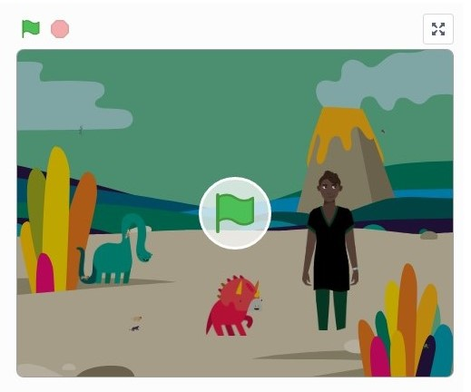

Home
Portfolio
About Me
This is my Portfolio Page!
Apples Falling Game
The idea for this project was to project apples falling from a tree and rolling down a hill.
Fruit Ninja Game
Fruits appear on the screen and eventually fall back down. When you click on them, the score increases and they reset position. There’s background music, a timer, a score and a leaderboard.
Scratch Program - Choose your own adventure

This scratch program is a choose your own adventure scenario. The main character travels to multiple different places, meeting new creatures along the way. Her journey starts at a park bench, where a fairy asks if she wants to go on an adventure. The first stop is the jungle, where the main character sees a panther, bat, snake, and a frog. The next stop is the Jurassic landscape, where the main character meets two friendly dinosaurs. After that, she arrives at the Savanna, where she has to run away from two hungry lions! She finally teleports back home, and the stimulation ends.